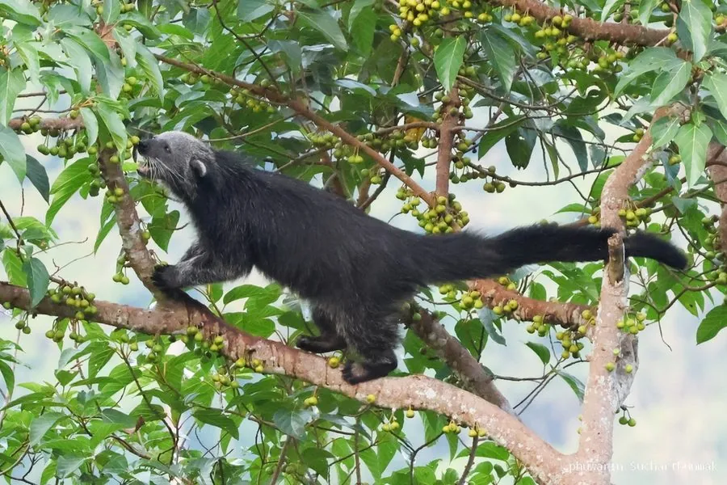

哺乳动物 · 动物界
熊狸 Arctictis binturong

东南亚雨林中的大型灵猫，体形粗壮、尾巴可缠绕树枝，身上有爆米花般的气味，以果实为主食，行动缓慢。
- 分类
- 门脊索动物门纲哺乳纲目食肉目科灵猫科属熊狸属
- 栖息环境
- 热带雨林与季雨林的树冠层
- 地理分布
- 中国云南南部及缅甸、泰国、马来半岛、苏门答腊、婆罗洲、菲律宾
- 保护级别
- IUCN 易危（VU）；中国国家一级保护动物
物种志
熊狸体长 0.6–0.95 米，尾长 0.6–0.9 米，体重 9–20 kg，是体型最大的灵猫科动物之一。它的身体粗壮，被毛为黑色夹杂灰白毛尖，面部有灰白色边缘，耳朵小而圆、边缘有白毛；尾巴粗长而具缠绕能力，末端可卷住树枝。
熊狸分布于东南亚的雨林，从中国云南南部、缅甸、泰国到马来半岛、苏门答腊、婆罗洲和菲律宾，栖息于热带雨林和季雨林树冠层。它以果实为主食，尤其喜食无花果，也吃树叶、嫩芽、鸟卵和小型动物；行动缓慢，善于攀爬，尾巴能像第五只手一样缠绕树枝。熊狸多在夜间活动，独居或成对，会用尾部和肛门腺的气味标记领地，其尿液散发出类似爆米花的香味。雌性妊娠期约 90 天，每胎 1–3 仔。由于森林砍伐和捕猎，熊狸被列为易危，中国将其列为国家一级保护动物。
形态与习性
- 食性果实为主，尤其喜食无花果，也吃树叶、嫩芽、鸟卵与小型动物
- 体长0.6–0.95 m，尾长 0.6–0.9 m
- 体重9–20 kg
- 寿命约 20 年
- 繁殖妊娠期约 90 天，每胎 1–3 仔
- 尾巴具有缠绕能力，可像第五只手抓住树枝
- 气味尿液散发类似爆米花的香味
趣味知识
- 熊狸的尾巴能缠绕树枝，作用几乎像第五只手。
- 它的尿液散发类似爆米花的香味，常被用来标记领地。
- 熊狸是体型最大的灵猫科动物之一，以果实为主食。
- 中国云南南部有熊狸分布，被列为国家一级保护动物。